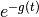

rraman.getBrownianDampingSlowMod¶
-
rraman.getBrownianDampingSlowMod(t, lmbda, T=298.0)¶ Calculate pure electronic dephasing due to interaction with solvent using frictionally overdamped Brownian oscillator model in the high-temperature and slow-modulation limit. The real part of g(t) leads to a Gaussian broadening of the spectra, while the imaginary part leads to a solvent induced Stokes shift.
Parameters: - t (array) – Time axis in fs.
- lmbda (float) – Solvent contribution to reorganization energy (cm-1).
- T (float) – Temperature (K, default = 298 K).
Returns: Damping term in the time domain, .
See also
This implementation is taken from Kulinowksi, J Phys Chem 99, 9017 (1995), Eq. (11).